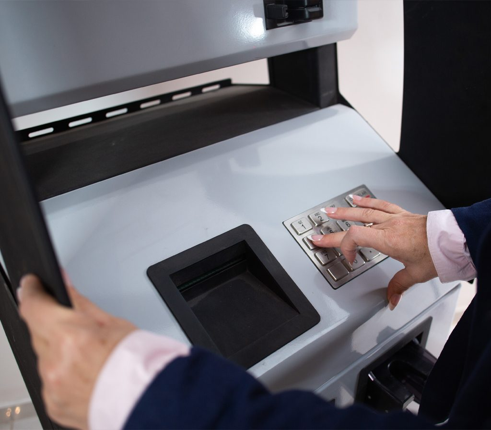
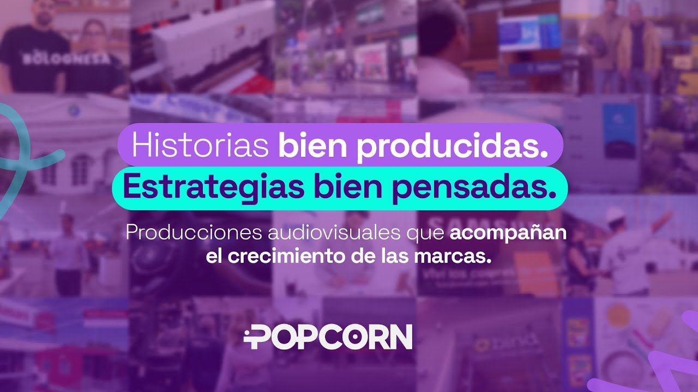
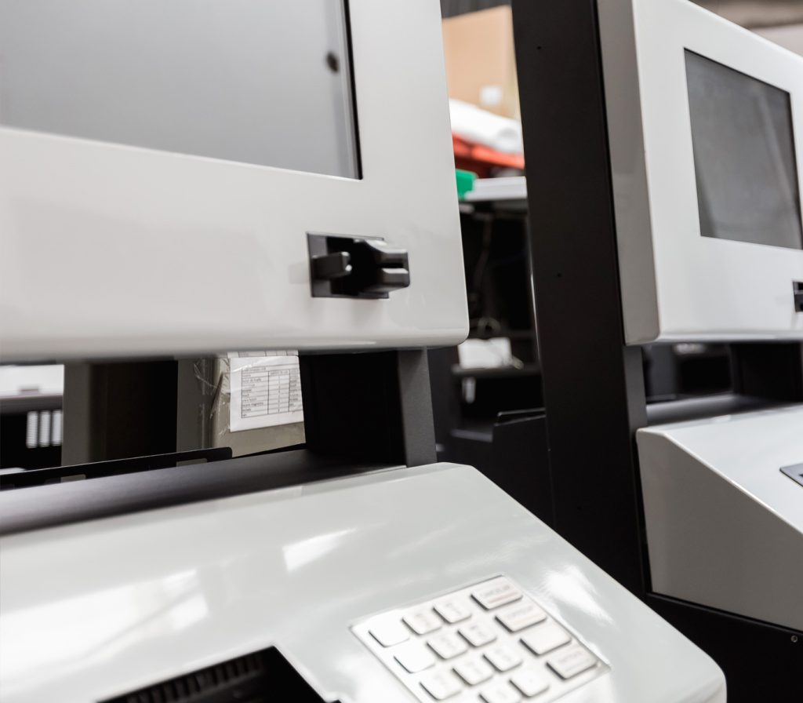
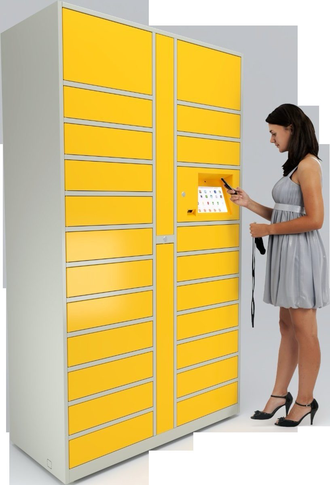

Propuesta comercial · Mediterránea

Hoy entre el 70% y el 80% de los negocios de Mediterránea vienen de la base de clientes que ya los conoce. Esta propuesta es sobre cómo construir el resto: un canal propio que traiga empresas nuevas, todos los meses, sin depender de que alguien se acuerde de llamarlos.
Popcorn es una agencia de marketing, comunicación y creatividad que trabaja desde una mirada de negocio. Antes de proponer una acción entendemos el negocio, los públicos, el mercado y el embudo. Recién después hablamos de canales.
Es lo que faltó hasta ahora: no un diseñador más rápido, sino alguien que primero pregunte para qué se está comunicando.

Popcorn ya desarrolló material institucional para Mediterránea y acompañó la presentación de su identidad actual. Conocemos la marca, el producto y la forma de trabajar de la empresa. Eso nos ahorra los primeros dos meses de cualquier agencia nueva: no tenemos que aprender quiénes son.
Sabemos que un Smart Locker no se explica con una foto genérica y que el equipamiento de autoservicio es difícil de comunicar. No vamos a aprenderlo a costa de ustedes.
Trabajamos sobre la identidad actual: el logo que a Julia le gusta se queda. Lo que falta es la normativa que nunca se escribió, y eso es exactamente lo primero que proponemos.
La relación con Horacio tiene años. Eso nos permite ser directos: esta propuesta dice también lo que no conviene hacer y en qué orden, no solo lo que podemos vender.
Lo que se conversó el 23 de septiembre no es un problema de diseño. Mediterránea vende bien, instala en todo el país y tiene una cartera de clientes que cualquier empresa querría. Lo que no tiene es una forma sistemática de que una empresa que todavía no la conoce llegue hasta ella.
Fuentes: reunión Mediterránea × Popcorn del 23/09/2026 (Horacio Barbagallo y Julia Stola) y auditoría web de Popcorn sobre mediterraneasa.com del 12/05/2026. Los porcentajes de origen del negocio y la meta de leads son los que declaró la empresa en la reunión.
No son opiniones de gusto. Son observaciones medidas sobre el sitio, la pauta y las redes de Mediterránea.
Smart Lockers comparte jerarquía en el menú con Banking, Retail, Soluciones, Soporte y Nosotros. El producto con el que la empresa quiere ganar terreno compite por atención con otros cinco.
Cuatro campos genéricos. No pregunta vertical, cantidad estimada de equipos, ubicación, plazo ni rol de quien consulta. Un curioso y una cadena de farmacias llegan exactamente igual.
ANSES, UADE, Siglo 21, Coppel, Edelar, el aeropuerto de Córdoba. La prueba social más difícil de conseguir ya está conseguida, y no hay un solo caso contado ni un testimonio en todo el sitio.
Toda la inversión se concentró en Instagram, para un producto B2B de ticket alto cuyo decisor busca soluciones en Google cuando tiene el problema, y evalúa proveedores en LinkedIn.
Hay logo y colores; no hay manual. El isologo aparece a veces blanco, a veces naranja, a veces a un lado y a veces al otro. Sin normativa, cada pieza es una decisión nueva y el feed no acumula.
Para una empresa con varias líneas de producto y nueve casos de uso listados, es una huella mínima. No hay una sola página por vertical: es imposible aparecer cuando alguien busca la solución a su problema puntual.
Relevamiento de Popcorn sobre mediterraneasa.com, 12/05/2026, más lo conversado en la reunión del 23/09/2026.
Se despierta con un problema: paquetes que nadie puede recibir, un portero desbordado, una fila en el mostrador, una sucursal que atiende de 10 a 15, gente que va dos veces a buscar lo mismo.
Por eso la comunicación no puede empezar por el equipo. Tiene que empezar por el problema que la empresa ya tiene y llegar al equipo como consecuencia. Es la diferencia entre mostrar un producto y hacer que alguien se reconozca en una situación.
Esto ordena todo lo demás: qué se escribe en la landing, qué se pauta en Google, qué se publica en LinkedIn y qué se filma en la planta. Y es lo que hace que un contenido orgánico deje de ser decorativo y empiece a ser comercial.
Lo dijo Horacio en la reunión, mejor de lo que lo hubiéramos dicho nosotros: en LinkedIn entra desde un rol puntual y buscando un resultado concreto; en Instagram está mirando, y si algo le queda en la cabeza lo va a investigar después. Son dos estados mentales distintos, no dos audiencias distintas.
Quién es: jefe de operaciones, de logística, de administración, de compras, gerente de sucursales, administrador de consorcios, responsable de infraestructura.
Qué le hablamos: el problema operativo concreto y cómo se resuelve. Casos, números, plazos de instalación, integración, soporte. Tono profesional y resolutivo.
Qué NO: contenido de marca sin sustancia, efemérides, frases motivacionales.
Quién es: el mismo decisor en modo distendido, más el equipo de esa empresa, proveedores, clientes actuales y futuros empleados.
Qué le hablamos: qué hace Mediterránea, dónde están sus equipos funcionando, cómo se fabrica, quién está detrás. Tono más educativo y de marca. Es la cara de presentación que Julia quiere poder mandar.
Qué NO: fichas técnicas ni lenguaje de licitación.
Hay dos momentos del usuario y cada uno tiene su canal. Google para el que hoy tiene el problema y está buscando cómo resolverlo: ahí no hay que convencer a nadie, hay que estar. Meta para construir presencia en el que todavía no sabe que existe una solución, de modo que cuando le toque tener el problema el nombre no le resulte desconocido.
Concentrar el 100% en Instagram, como venía pasando, resuelve solo la mitad más lenta de esa ecuación.
Relevamos a los fabricantes argentinos de Smart Lockers y terminales de autoservicio. La conclusión es incómoda para ellos y muy buena para Mediterránea: ninguno publica un caso de éxito con resultados, ninguno muestra una instalación real en video y ninguno desarrolla un vertical en profundidad. Todos listan los mismos siete u ocho casos de uso genéricos.
El fabricante argentino más establecido muestra más de treinta marcas en su home —telcos, bancos, correos, retail— y detrás no hay ni un caso, ni un número, ni un testimonio. Exactamente la misma pared de logos que hoy tiene Mediterránea. El primero que convierta esos logos en historias se queda con la categoría.
Las redes públicas de lockers no venden equipos: venden envíos, y ya están integradas en el checkout de las plataformas de e-commerce. No son competencia del mismo producto, pero sí de la misma decisión: cuando una empresa evalúa cómo resolver las entregas, aparecen primero. Nadie explica hoy cuándo conviene tener equipo propio y cuándo no.
El competidor más grande ronda los 1.400 seguidores y ninguna página del rubro muestra actividad reciente. Es el canal donde está el decisor y hoy es el perfil más chico de Mediterránea. La barrera de entrada es bajísima y por ahora nadie la cruzó.
Fuentes: CACE, informe Mid Term primer semestre 2026 (órdenes de compra). Infobae sobre datos de importaciones vía courier, 19/06/2026. Índice CEDOL de costos logísticos, acumulado 2026. BCRA vía Infobae, 24/02/2026 (sucursales bancarias). Relevamiento de competencia y de perfiles públicos de Popcorn, 24/09/2026. No relevamos la inversión publicitaria de los competidores: ese dato no es público y no lo vamos a estimar.
La home de Mediterránea muestra clientes que cualquier competidor querría: ANSES, UADE, Siglo 21, Coppel, Edelar, el aeropuerto de Córdoba. Pero la página de Smart Lockers —el producto que la empresa quiere empujar— no nombra a ninguno.
La prueba más difícil de conseguir ya está conseguida y está en el lugar equivocado. Moverla no cuesta casi nada; no haberla movido cuesta cada consulta que no llega.

Prueba ya conseguida Equipamiento propio, instalado y funcionando en todo el paísLa página actual lista nueve casos de uso en el mismo plano. No pueden trabajarse todos a la vez con este presupuesto, y además no rinden igual: cambia el dolor, quién decide, cuánto tarda y si existe una alternativa más barata. Esta es la priorización que proponemos y por qué.
| Prioridad | Vertical | Por qué | Quién decide |
|---|---|---|---|
| 1 | Oficinas corporativas | El trabajo híbrido rompió la entrega sincrónica: el paquete llega el día que no hay nadie. Hay presupuesto propio, no hay asamblea que convencer y se replica por sede. | Facility manager, administración, RR.HH. |
| 2 | Salud institucional | La adopción ya está demostrada con la autogestión de turnos y la autoadmisión en hospitales y clínicas. La barrera cultural está vencida: no hay que explicar el concepto. | Dirección médica, sistemas, operaciones |
| 3 | Edificios y countries | El dolor más alto de todos —la portería desbordada— pero la decisión más lenta: la toma una asamblea. El camino corto es entrar por los desarrolladores y que se especifique en el proyecto. | Desarrollador, administrador, consejo |
| 4 | Retail | Único vertical donde se le venden dos líneas al mismo decisor: terminales de autogestión y lockers de retiro de compras online. Ciclo largo y pocas cuentas, pero de ticket alto. | Operaciones, transformación digital |
| 5 | Logística y correos | El mayor volumen potencial y la menor probabilidad de cierre: ya tienen equipos propios o una red de puntos de retiro más barata. Es cuenta estratégica, no campaña. | Dirección de operaciones |
| 6 | Gobierno y universidades | Se ganan por licitación o por relación, no por marketing. Valen como credencial y prueba social visible, no como línea de facturación. | Compras, secretaría técnica |
No descubre proveedores en redes: los valida. Llega por referencia o por Google, entra al sitio, revisa el LinkedIn de la empresa y de sus directivos, busca clientes parecidos al suyo y termina queriendo ver un equipo funcionando.
Dos consecuencias prácticas: el LinkedIn de los directivos pesa tanto como el de la empresa, y ningún plan digital está completo si no termina en una demostración física.
La dispensa de medicamentos bajo receta exige farmacia habilitada y dirección técnica farmacéutica. No encontramos normativa que habilite ni que prohíba expresamente el retiro por locker: es un vacío.
Por eso, en todo material de ese vertical vamos a hablar de «entrega de medicación ya dispensada por el farmacéutico» y nunca de «dispensación automatizada». Es una diferencia de dos palabras con consecuencia legal.
El orden importa más que la lista. Pautar antes de tener a dónde llevar al usuario es tirar plata; publicar antes de tener la marca escrita es acumular piezas que no suman.
Manual básico y key visual. Se define una vez y deja de discutirse.
Landing que explica el problema y califica al que consulta.
Google para el que ya busca. Meta para el que todavía no sabe que existe.
Ocho piezas al mes con material real de la planta, no imagen de banco.
Reunión quincenal, reporte mensual y decisiones sobre datos.
Acceso a la planta una vez por mes si toman la jornada de captura, disponibilidad del equipo técnico para hablar a cámara, y una reunión cada quince días con Marketing. Sin eso, ninguna agencia llega al resultado. Lo decimos ahora y no en el mes tres.
Que aprueben pieza por pieza con veinte idas y vueltas, que escriban los textos, ni que resuelvan qué filmar. Ese es nuestro trabajo: Julia pasa de ejecutar a decidir.

El producto ancla Smart Lockers · el foco comercial de los próximos añosLa parte de arriba se construye una sola vez y queda: la marca escrita, el sistema de piezas, la landing y las campañas armadas. La parte de abajo es la que sostiene el resultado mes a mes.
Tal como se conversó, la identidad y el key visual son la prioridad uno, y el acompañamiento estratégico es el corazón: la dupla que hoy falta para convertir ideas en ejecución.
Normativa de marca sobre el logo actual —no se rehace el logo— con usos del isologo, colores, tipografía principal y secundaria, grilla y criterios de fotografía y de uso de IA. Más el sistema de piezas para feed, stories, carrusel, reel y anuncio, con plantillas editables para que Mediterránea resuelva sola lo urgente.
Una página con un solo objetivo: que una empresa con el problema entienda la solución y deje sus datos. Formulario que califica por vertical, cantidad estimada, ubicación, plazo y rol. Prueba social con los casos anonimizados. Medición completa instalada desde el día uno.
Lo que nunca existió: la estrategia previa. Apertura y saneamiento de cuentas, medición y conversiones, arquitectura de campañas, audiencias por vertical y el primer set de creatividades por formato. Google para la búsqueda activa, Meta para construir marca.
Reunión quincenal con Marketing, plan mensual con objetivo declarado, brief de qué filmar y cómo, seguimiento de los leads calificados y reporte ejecutivo. Incluye definir con el área comercial qué cuenta como lead calificado, que es la conversación que quedó pendiente.
Ocho piezas mensuales: cinco estáticas o carruseles y tres videos cortos. La misma pieza visual con textos distintos por red —profesional y resolutivo en LinkedIn, más educativo y de marca en Instagram—. Incluye publicación, stories y moderación de comentarios y mensajes.
Google y Meta. Optimización dos veces por semana, creatividades por formato, testeo de mensajes por vertical y reporte mensual con el costo por lead calificado. La inversión en medios la paga Mediterránea directo a las plataformas: nunca pasa por nosotros.
Una media jornada por mes en la planta, con guion previo y dirección en el lugar: equipos, instalaciones, técnicos trabajando y testimonios a cámara. Entrega material propio para todo el mes y deja banco de imagen para el equipo comercial. Es lo que termina con la imagen de banco.
Responde a lo que planteó Julia: «yo ya sé filmar, necesito que me digas qué filmo y cómo». Guion mensual pieza por pieza, guía de captura con encuadre, luz y sonido, lista de tomas, y toda la edición y postproducción en Popcorn. Cuesta menos y exige más tiempo del equipo interno.
Tildá los servicios con los que quieran avanzar. Abajo se arma el correo con la selección y el total, listo para enviarnos. No hace falta tomar todo: cada bloque funciona por separado, aunque más abajo aclaramos qué depende de qué.
Qué depende de qué. La pauta necesita la landing: sin un lugar donde el usuario entienda la solución y pueda dejar sus datos, la inversión se pierde. Y los contenidos necesitan la identidad: sin normativa, cada pieza vuelve a ser una discusión.
El corazón es el acompañamiento. Si hubiera que empezar por una sola cosa, es esa. Es lo que convierte las ideas de Marketing en ejecución y lo único que ataca la causa del problema, no el síntoma.
Captura: elegir A o B. Son alternativas, no complementos. A resuelve de raíz el problema de calidad; B cuesta menos y pide más tiempo del equipo de Mediterránea.
Formas de pago. Proyectos de única vez: 100% por adelantado con 3% de descuento, o 50% al inicio y 50% a 30 días al valor de lista. Servicio mensual: se factura por mes adelantado.
Vigencia. Los valores se mantienen 10 días desde la fecha de esta propuesta. En contratos mensuales se acuerda una actualización periódica por índice.
Se abre un correo a Sol Ferrari con copia a Florencia Grigolatto, con el detalle ya escrito. Podés editarlo antes de enviarlo.
Valores en pesos argentinos, sin IVA · Propuesta válida hasta el 4 de octubre de 2026
Tres leads calificados por mes. Todo lo demás son señales intermedias que sirven para saber si vamos en camino, no para reemplazar el resultado. No vamos a reportar alcance ni seguidores como si fueran ventas.
Ahora bien, hay algo que preferimos decir ahora y no en el mes seis: esta es una categoría que todavía no está madura en Argentina. Buena parte del mercado no busca «smart locker» porque no sabe que existe como solución a su problema. Eso significa que el primer tramo del trabajo es tanto de crear demanda como de capturarla, y que los primeros meses se leen distinto que en una categoría establecida.
| Métrica | Qué nos dice | Cuándo empieza a leerse |
|---|---|---|
| Leads calificados por mes | El resultado. Se cuenta contra la definición que acordemos entre marketing y comercial, no contra la nuestra. | Desde el mes 2, con la pauta activa |
| Costo por lead calificado | Cuánto cuesta cada oportunidad real. Es el número que define si conviene subir o bajar la inversión. | Mes 3, con volumen suficiente |
| Reuniones agendadas | Cuántos de esos leads llegan efectivamente a una mesa. Mide la calidad, no la cantidad. | Mes 3 |
| Conversión de la landing | Qué porcentaje de las visitas deja sus datos. Si es baja, el problema es el mensaje, no el presupuesto. | Mes 2 |
| Consultas entrantes por vertical | De dónde viene la demanda real: edificios, retail, salud, logística. Orienta dónde poner el foco comercial. | Mes 3 |
| Alcance entre decisores en LinkedIn | Si el contenido está llegando a los cargos que deciden o solo a colegas del sector. | Mes 2 |
No vamos a proyectar una cantidad exacta de leads antes de conocer la inversión real en medios y el costo por clic de la categoría. Cualquier número que pongamos hoy sería inventado. En el primer mes de campaña vamos a tener datos propios y ahí sí proyectamos con fundamento.
Decir la verdad cuando algo no funcione, con el dato en la mano y una propuesta de cambio. Si en el mes 3 el costo por lead no cierra, lo vamos a decir nosotros antes de que lo pregunten.
Mediterránea vende un bien de capital: el primer renglón que una empresa argentina posterga cuando hay incertidumbre. Si hoy no existe una modalidad de alquiler, pago por uso o comodato, esa es probablemente la palanca comercial más grande disponible, y es una decisión de negocio que se toma adentro de Mediterránea, no en una agencia.
Lo decimos igual porque cambia el resultado de todo lo demás: con una opción sin desembolso inicial, la misma inversión en pauta rinde bastante más. No lo facturamos y no nos corresponde ejecutarlo. Si quieren, lo pensamos juntos.
Arranca cuando se confirma la propuesta y llegan los accesos. Las dos primeras semanas son de construcción: todavía no se ve nada publicado, y eso es lo correcto.
Reunión de kickoff, accesos a cuentas y perfiles, y la conversación pendiente: qué es un lead calificado para Mediterránea. Revisión del material de marca existente y del audiovisual que junte Julia.
Manual básico y key visual presentados y aprobados. En paralelo arranca la landing. Se abren y sanean las cuentas publicitarias y se instala la medición completa.
Primera captura de material en la planta, o primer envío de material filmado por Mediterránea con nuestro guion, según la opción elegida. Con eso se produce el contenido del mes siguiente.
Landing publicada y campañas activas en Google y Meta. Primeras ocho piezas en Instagram y LinkedIn con los dos tonos diferenciados. Primeras lecturas de tráfico y conversión.
Con dos meses de datos propios ya se puede decir qué vertical responde, cuánto cuesta un lead calificado y dónde conviene concentrar la inversión. Acá se ajusta el plan, no antes.
Se sube la inversión donde el costo por lead cierra y se corta donde no. Es también el momento natural para evaluar la etapa 2: el sitio nuevo y los primeros casos de éxito audiovisuales.
Varias de estas quedaron pendientes de la reunión del 23. No son trámites: sin ellas la primera campaña sale a ciegas y la estrategia se apoya en supuestos nuestros en lugar de datos de ustedes.
Tildar en la sección anterior los servicios con los que quieran avanzar y enviarnos el correo que se arma solo.
Los números exactos de la inversión publicitaria actual. Es el dato que falta para dimensionar el reparto entre Google y Meta y proyectar resultados sin inventar.
Media hora entre marketing y comercial. Es la métrica con la que se va a medir todo el trabajo: conviene acordarla antes de empezar, no después.
El documento de marca que armaron internamente, aunque esté a medio hacer. Define desde dónde partimos.
Videos de casos de uso, equipos instalados y testimonios del equipo técnico. Determina cuánto hay que producir de cero.
Ciclo de venta y ticket promedio por vertical, de dónde vienen hoy las oportunidades, qué clientes autorizan ser nombrados y si el cuello de botella es la demanda o la capacidad de producción. Con eso la estrategia deja de apoyarse en supuestos.
Una reunión de una hora con marketing y comercial para bajar todo esto a un plan con fechas y responsables. Arrancamos.
Eso no se resuelve publicando más seguido. Se resuelve construyendo un camino: un mensaje que empiece por el problema, un lugar donde caer y una inversión que vaya a donde está el que decide.
HablemosPropuesta preparada para Mediterránea Tecnológica S.A. · 24 de septiembre de 2026 · válida hasta el 4 de octubre de 2026
Documento confidencial. Valores en pesos argentinos, sin IVA.